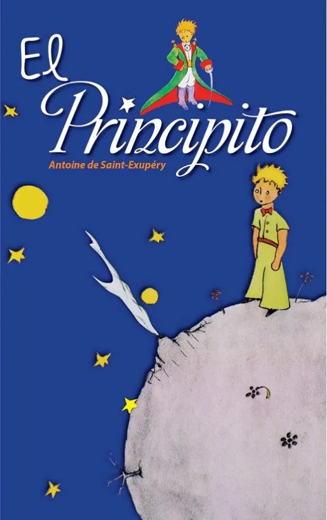
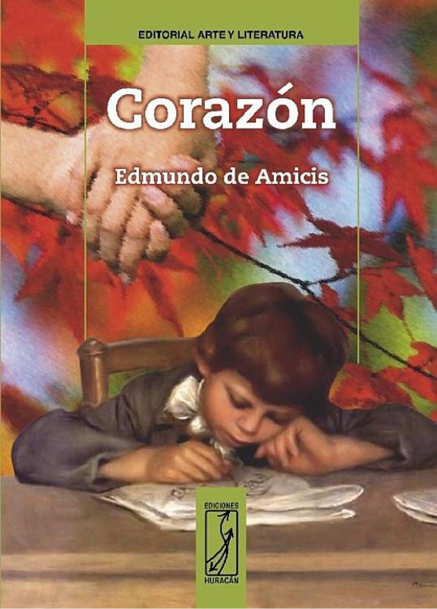
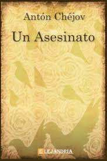

El Principito: Me puse en pie de un salto como herido por el rayo. Me froté los ojos. Miré a mi alrededor. Vi a un extraordinario muchachito que me miraba gravemente. Ahí tienen el mejor retrato que más tarde logré hacer de él, aunque mi dibujo, ciertamente es menos encantador que el modelo. Pero no es mía la culpa. Las personas mayores me desanimaron de mi carrera de pintor a la edad de seis años y no había aprendido a dibujar otra cosa que boas cerradas y boas abiertas. 
Diario de un niño: Ha comenzado el año con una desgracia. Al ir esta mañana a la escuela, contando yo a mi padre, de camino, las palabras del maestro, vimos de pronto la calle llena de gente que se agolpaba delante del colegio. 
El asesinato: Una lamparilla verde encendida ante el icono alumbra con luz débil e incierta. Colgados a una cuerda que atraviesa la habitación se ven unos pañales y un pantalón negro. La lamparilla proyecta en el techo un gran círculo verde; las sombras de los pañales y el pantalón se agitan, como sacudidas por el viento, sobre la estufa, sobre la cuna y sobre Varka. 